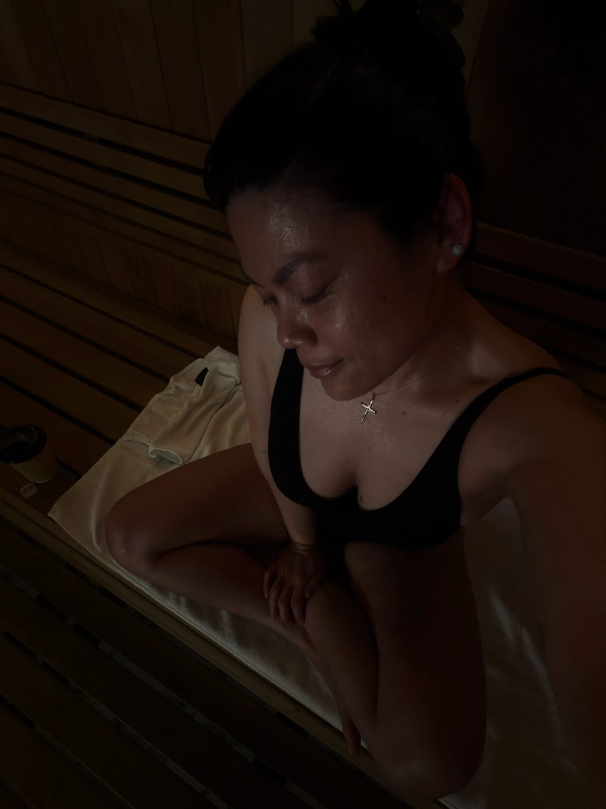

Struggling with bloating, weight gain, or painful periods? Here’s my personal wellness journey and how I used gut health and hormone support to heal naturally.
I remember sitting in traffic for hours every single day—two hours to work, and sometimes over two hours just to get home. By the time I walked through my door, I was exhausted.
Easy, quick meals became my routine. Scrambled eggs with cheese and yogurt for breakfast. Lunch was usually the hot bar at Whole Foods—my go-to was the garlic kale salad with salmon and a few other “healthy” options. Dinner? Whatever was fast. Mac and cheese with tuna, a sandwich, or leftovers.
At the time, I genuinely thought I was doing everything right.
I didn’t drink soda. I wasn’t constantly eating fast food. I cooked when I could. Worked about 3 times a week. Sometimes I’d have a glass of wine at night, but most days I was just rushing to eat and get into bed so I could wake up early and do it all over again.
From the outside, it looked like a pretty healthy lifestyle.
But then… something shifted.
Out of nowhere, I started waking up in the middle of the night with intense, almost unbearable stomach pain. It would jolt me awake, and I’d lay there in the dark trying to understand what was happening to my body.
Night after night, it kept happening.
At first, I reached for Tums. Every single night. Eventually, they stopped working. So I turned to ibuprofen—because I needed something to make the pain stop. I couldn’t sleep. I was exhausted, frustrated, and honestly scared.
And then one night, I had this thought:
This can’t be normal.
That’s when I finally scheduled a doctor’s appointment.
I remember feeling terrified walking in. I had already convinced myself it was something serious. They ran test after test… and everything came back normal.
Instead of feeling relieved, I felt confused.
Because if everything was “fine”… why did I feel like something was wrong?
I was referred to a specialist. More tests. More waiting. Still nothing. At one point, I was simply told to eat more fiber—like papaya.
And I remember thinking… that’s it?
No real answers. No real direction.
So I decided to take things into my own hands.
I started a simple food journal. Around that same time, I had a friend seeing a nutritionist, and it sparked something in me. I became curious.
I started learning about our food system, hidden ingredients, hormones, and how the body actually works.
And what I realized shocked me.
I had always believed that as long as I wasn’t eating fast food or sugary snacks—and I was making my meals—I was healthy.
But I quickly learned that “healthy” isn’t always what it seems.
At the same time, my body started changing. I was gaining weight without eating more. My confidence dropped. I didn’t recognize my body anymore.
I felt stuck in my own body.
So I started making changes.
I cut out dairy… and within one week, I lost 5 pounds.
That was my first real sign that my body was trying to communicate with me.
From there, I became more intentional. I started reading ingredient labels. Choosing cleaner foods. Paying attention to how I felt.
Then I discovered cycle syncing.
Around that same time, I had gotten off birth control—and it was rough. Heavy periods, intense cramps, and cycles lasting 7 to 10 days. I found myself relying on ibuprofen again just to get through it.
There were moments I considered going back on birth control… because I was miserable.
But something in me didn’t want to go backwards.
So I started learning how to support my hormones naturally.
I didn’t fully believe it would work—but I was willing to try.
And slowly, things started to shift.
After three months, I noticed small changes.
After six months, even more.
My periods were still long, but lighter. My cramps became manageable.
And over time, everything changed.
After two years of consistency, I had:
- Lost weight and inflammation
- Gained my energy back
- Minimal cramps to no cramps
- A balanced 5-day cycle
- Got rid of bloating
But more importantly…
I finally understood my body.
I wasn’t fighting it anymore—I was working with it.
That’s when I discovered integrative health… and it completely changed my life. I decided to get certified
because I remember exactly what it felt like to feel confused, dismissed, and disconnected from my body.
If that’s where you are right now… you’re not alone.
Your body isn’t broken—it’s asking for support.
And when you learn how to listen, everything can change 🤍